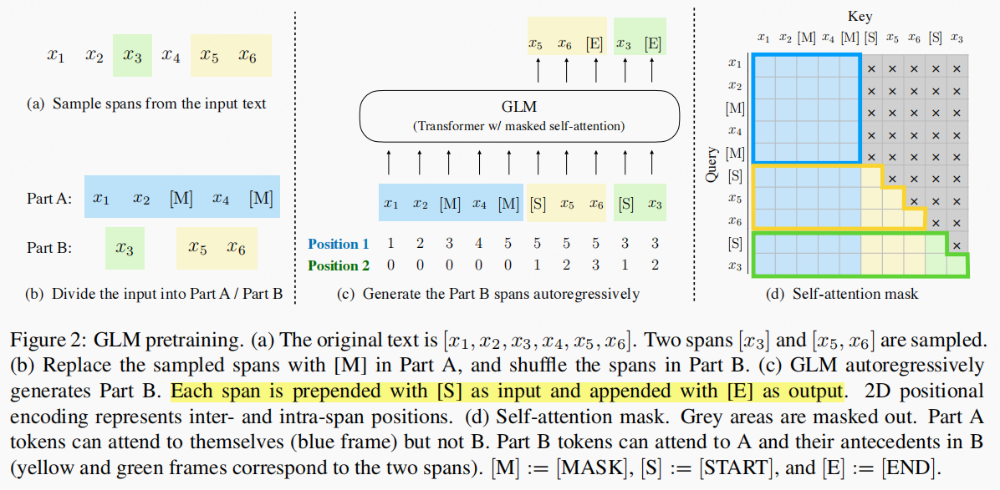
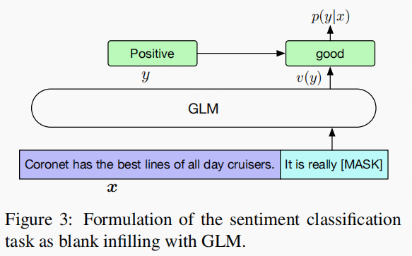

- 原始论文: GLM: General Language Model Pretraining
- 官方代码：GLM
文章idea
- 基于
unlabeled text训练的LM提高了很多NLP任务的sota。 - 一般来讲，存在的预训练框架有三种：(1)
autoregressive: 比如GPT[left-to-right language models]，在长文本生成和few-shot能力方面非常成功；其不足是单向的attention机制，不能够完全获取内容之间的依赖关系。(2)autoencoding: 比如BERT，双向的encoder，其不足是此方案只适用于NLU任务，不适合做文本生成。(3)encoder-decoder：比如transformer，其encoder部分是双向，decoder是单向attention和cross attention，其适合做一些conditional generation任务，text summarization和response generation。 - 作者认为没有一个统一的框架，适合所有的
NLP任务。所以本文提出了一个基于blank infilling的GLM(General language Model)。
文章主旨
- 提出了新的语言模型：
GLM(General language Model)
模型架构

GLM被训练基于autoregressive blank infilling损失。- 针对一条输入 ，随机采样多个
span，将其都替换成[MASK]，这样就得到了新的输入，模型以autoregressive的方式预测每条span中缺失的tokens。 - 针对
spans的顺序进行shuffle，为了获取其相互之间的独立性。 - 定义 是长度是
m序列[1, 2, …, m]的所有可能的排列。则定义预训练目标则是： - 输入
x被分成两部分，Part A是，Part B包含了masked spans，由于此处使用了mask attention，所以：Part A tokens can attend to each other, but cannot attend to any tokens in B.Part B tokens can attend to Part A and antecedents in B, but cannot attend to any subsequent tokens in B
使用了多任务损失：
Document-level:span的长度采样是原始句子长度的50%–100%。此举目的是长文本生成。Sentence-level:span被限制在所有的句子中，而且采样覆盖15%的原始token，此举的目的是seq2seq任务。
GLM针对Transformer做了一些调整：- 针对
LN与residual connection的顺序进行了交换。 - 最终输出只使用了一个
linear layer预测token - 使用了
GeLUs代替ReLU.
- 针对
- 由于使用了
blank infilling任务，所以对使用了2D positional encodings，每个token编码两个position id，详情见上图。- 第一个
position id是表示的位置。 - 第二个
position id是表示intra-span的position。
- 第一个
Finetuning GLM

- 由于
GLM属于生成式的预训练任务，所以其Finetune方式也采用了blank infilling。具体来讲：we convert the input text x to a cloze question c(x) via a pattern containing a single mask token；举例来讲，输入:{SENTENCE}. It’s really [MASK]。输出：goodorbad. conditional generation：partA是context+[MASK]; 自回归的方式生成partB。- 有可以使用
GLM进行unconditional generation。
模型实验
略